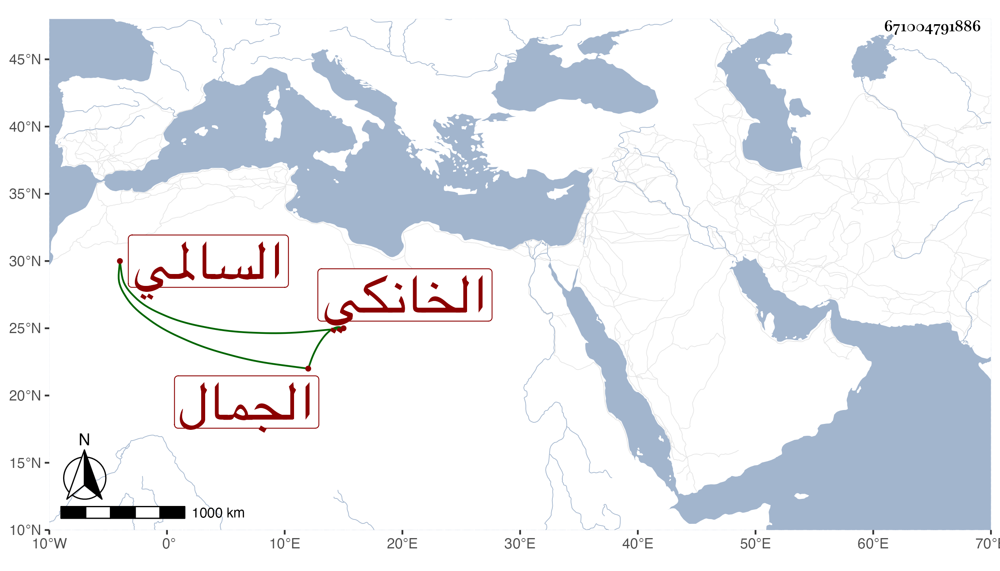

0902Sakhawi.DawLamic.ITO20230111-ara1.EIS1600.671004791886
Biography ID: 671004791886
271
عبد الله الجمال الخانكي تربية السالمي . ممن اعتنى به ابن مفلح اليماني لكونه كان مولدا عنده بحيث وقف عليه وعلى ابنين له في جهات بر عقارات بالخانقاه وكان عنده كثير من إثبات ابن مفلح وأجزائه وممن أجاز لهذا عائشة ابنة ابن عبد الهادي ولا أستبعد إسماعه على غيرها . مات عن سن تزيد على التسعين أو دونها في رجب سنة إحدى وتسعين وكان متجملا في لباسه محاكيا في ذلك رؤساء بلده بل إذا رأى على ابن الأشقر ثيابا لا يقر ولا يهدأ حتى يجدد مثلها ممن يركب البغلة ولم ير لمزيد شهامته واقفا على سوقي ولا تولى غالبا شراء شيء بنفسه وكان بأخرة يكتب على الاستدعاءات ، وممن لقيه ابن الشيخ يوسف الصفي وغيره رحمه الله وإيانا .
